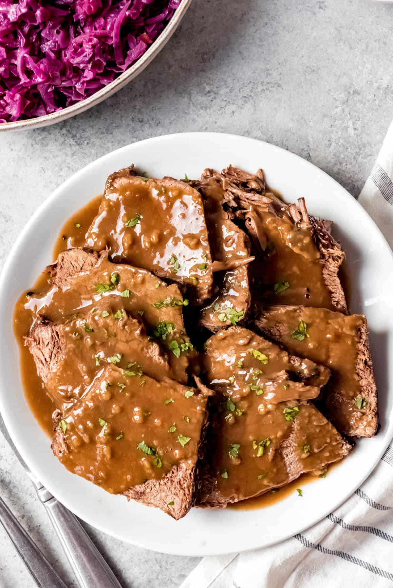

Sauerbraten

Description: A plate of a savory German-Texas sauerbraten.
Ingredients
For the marinade:
- 4-5 pounds beef roast
- 1 onion, sliced
- 2 carrots, sliced
- 2 cloves garlic, minced
- 10-12 whold cloves
- 10-12 whole black pepercorns
- 2 bay leaves
- 1 teaspoon mustard seeds
- 1 teaspoon juniper berries
- 1 cup red wine vinegar
- 1 cup filtered water
- 1/2 cup red wine
- 1/4 cup brown sugar
- 1 teaspoon salt
For cooking:
- 2 tablespoons vegetable oil
- 2 tablespoons butter
- 1 onion, chopped
- 2 tablespoons all-purpose flour
- 1 cup beef broth
- 1/2 cup sour cream
Instructions:
- In a large container, combine the onion, carrots, garlic, cloves, peppercorns, bay leaves, mustard seeds, juniper berries, red wine vinegar, water, red wine, brown sugar, and salt.
- Place the beef roast in the marinade, ensuring it's fully submerged. Cover the container and refrigerate for at least 2 to 3 days, turning the meat occasionally to evenly marinate.
- After marinating, remove the beef from the marinade and pat it dry with paper towels. Strain the marinade and set it aside.
- In a large Dutch oven or heavy pot, heat the vegetable oil and butter over medium-high heat. Brown the beef roast on all sides. Remove the beef from the pot and set it aside.
- In the same pot, add the chopped onion and sauté until translucent.
- Sprinkle the flour over the onions and cook for a couple of minutes, stirring constantly.
- Gradually add the strained marinade and beef broth to the pot, stirring to combine and create a smooth sauce.
- Return the beef to the pot. Cover and let it simmer on low heat for about 2.5 to 3 hours, or until the beef is tender.
- Remove the beef from the pot and cover it to keep warm.
- Strain the sauce to remove any solids and return it to the pot. Stir in the sour cream and heat gently without boiling.
- Slice the beef and serve it with the sauce.